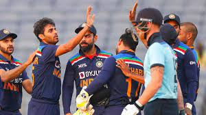
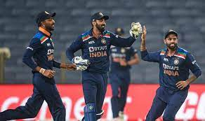
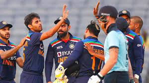
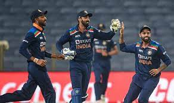

The earliest reference to cricket is in South East England in the mid-16th century. It spread globally with the expansion of the British Empire, with the first international matches in the second half of the 19th century. The game's governing body is the International Cricket Council (ICC), which has over 100 members, twelve of which are full members who play Test matches. The game's rules, the Laws of Cricket, are maintained by Marylebone Cricket Club (MCC) in London . The sport is followed primarily in the Indian subcontinent, Australasia, the United Kingdom, southern Africa and the West Indies.[1] Women's cricket, which is organised and played separately, has also achieved international standard. The most successful side playing international cricket is Australia, which has won seven One Day International trophies, including five World Cups, more than any other country and has been the top-rated Test side more than any other country.
play in all-white kit, but in limited overs cricket they wear club or team colours. In addition to the basic kit, some players wear protective gear to prevent injury caused by the ball, which is a hard, solid spheroid made of compressed leather with a slightly raised sewn seam enclosing a cork core layered with tightly wound string.

 


 | Player Name | Fours | Sixes | Run Scored | Strike Taken | Wicket Keeper |
|---|---|---|---|---|---|
| Virat Kohli | 10 | 7 | 10 | 102.1 | 0 |
| Rohit Sharma | 5 | 4 | 5 | 100.1 | 1 |
| MS Dhoni | 7 | 5 | 5 | 112.2 | 0 |
| MD Siraj | 10 | 5 | 3 | 100.2 | 6 |